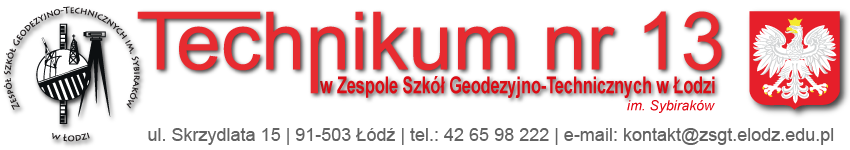

| Jesteśmy stroną prowadzoną przez kółko informatyczne pochodzące z Zespołu Szkół Geodezyjno-Technicznnych w Łodzi. Nasz cel to zainteresowanie młodych informatyków różnymi ciekawymi tematami, przekazywanie informacji i nowinek na czasie oraz organizacja konkursów z nagrodami. | |
|  | |
| Nasza strona jest w pełni prowadzona przez naszą kadrę informatyków z różnych klas pod opieką nauczycieli specializujących się w dziedzinie informatyki. Uczniowie sami pilnują, konserwują i polepszają stronę w razie jakichkolwiek problemów lub przestarzałego wyglądu. |